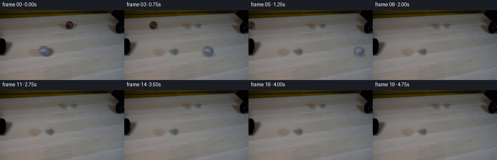
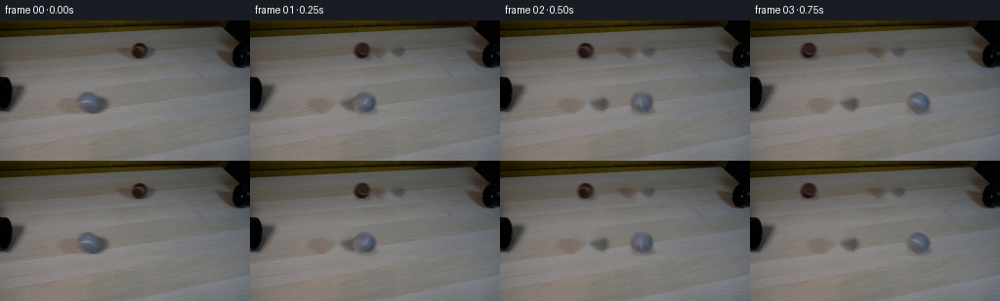

CODING AGENTS AS PIXEL WORLD MODELS
traex/GPT-5.6-Sol · 0178
点击播放 · 原生 RGB 像素
逐轮保存的候选
回放视频、检查图与代码变化。
每份候选均可单独播放。实际图片检查记录在下方工具轨迹中。
候选 01播放与检查图
点击播放 · 原生 RGB 像素


展开代码变化
--- 上一保存版本
+++ 本次保存版本
@@ -0,0 +1,156 @@
+"""Deterministic continuation for the two-ball, two-pipe demonstration.
+
+Only the supplied first RGB frame is used as visual source. The locked camera
+plate is recovered by removing the two balls, and their actual pixels are used
+as shaded sprites. Ball-surface detail rotates at the rolling rate while the
+low-frequency illumination remains fixed in screen coordinates.
+"""
+from pathlib import Path
+
+import cv2
+import numpy as np
+from PIL import Image
+
+import artifact_io
+
+
+HERE = Path(__file__).resolve().parent
+H, W = 144, 256
+
+
+def soft_disk(size, cx, cy, radius, feather=1.25):
+ yy, xx = np.mgrid[:size[0], :size[1]]
+ d = np.hypot(xx - cx, yy - cy)
+ return np.clip((radius + feather - d) / (2.0 * feather), 0.0, 1.0).astype(np.float32)
+
+
+def recover_plate(frame, balls):
+ """Remove the balls and contact shadows from the otherwise static plate."""
+ mask = np.zeros((H, W), np.uint8)
+ for b in balls:
+ cx, cy, r = b["center"][0], b["center"][1], b["radius"]
+ # The expanded lower part also clears each ball's original cast shadow.
+ cv2.circle(mask, (round(cx), round(cy)), round(r + 3.5), 255, -1)
+ cv2.ellipse(mask, (round(cx + 1), round(cy + .72*r)),
+ (round(1.22*r), round(.55*r)), 0, 0, 360, 255, -1)
+ # Telea follows the fine, irregular wood/stone texture around each tiny hole.
+ plate = cv2.inpaint(frame, mask, 4.0, cv2.INPAINT_TELEA)
+ # Inpaint can be locally too smooth. Add only very faint high-pass texture,
+ # sampled from the original stationary plate, inside the repaired region.
+ local = frame.astype(np.float32)
+ low = cv2.GaussianBlur(local, (0, 0), 2.0)
+ detail = local - low
+ # Shift neighboring texture into each mask; this avoids retaining ball detail.
+ shifted = np.roll(detail, 22, axis=1)
+ repaired = mask.astype(np.float32)[..., None] / 255.0
+ plate = plate.astype(np.float32) + repaired * shifted * 0.13
+ return np.clip(plate, 0, 255).astype(np.uint8)
+
+
+def make_sprite(frame, spec):
+ """Extract a premultiplied circular source and a lighting/detail decomposition."""
+ cx, cy = spec["center"]
+ r = spec["radius"]
+ margin = 5
+ half = int(np.ceil(r + margin))
+ x0, y0 = int(round(cx)) - half, int(round(cy)) - half
+ x1, y1 = int(round(cx)) + half + 1, int(round(cy)) + half + 1
+ patch = frame[y0:y1, x0:x1].astype(np.float32)
+ pcx, pcy = cx - x0, cy - y0
+ alpha = soft_disk(patch.shape[:2], pcx, pcy, r, feather=1.0)
+
+ # Low frequencies contain the stationary spherical illumination. Fine detail
+ # contains fuzz and seam cues and is the part that turns as the ball rolls.
+ low = cv2.GaussianBlur(patch, (0, 0), 2.25)
+ detail = patch - low
+ return {"low": low, "detail": detail, "alpha": alpha,
+ "pc": (pcx, pcy), "shape": patch.shape[:2], "radius": r}
+
+
+def rotated_ball(sprite, degrees):
+ h, w = sprite["shape"]
+ m = cv2.getRotationMatrix2D(sprite["pc"], degrees, 1.0)
+ # Rotate only material detail, not the illumination field or silhouette.
+ d = cv2.warpAffine(sprite["detail"], m, (w, h), flags=cv2.INTER_CUBIC,
+ borderMode=cv2.BORDER_REFLECT_101)
+ rgb = np.clip(sprite["low"] + d, 0, 255)
+ return rgb, sprite["alpha"]
+
+
+def alpha_over(canvas, rgb, alpha, center, pc):
+ """Composite a small sprite onto a float RGB canvas with edge clipping."""
+ h, w = alpha.shape
+ x0 = int(np.floor(center[0] - pc[0]))
+ y0 = int(np.floor(center[1] - pc[1]))
+ sx0, sy0 = max(0, -x0), max(0, -y0)
+ sx1, sy1 = min(w, W - x0), min(h, H - y0)
+ if sx1 <= sx0 or sy1 <= sy0:
+ return
+ dx0, dy0 = x0 + sx0, y0 + sy0
+ dx1, dy1 = x0 + sx1, y0 + sy1
+ a = alpha[sy0:sy1, sx0:sx1, None]
+ canvas[dy0:dy1, dx0:dx1] = (canvas[dy0:dy1, dx0:dx1] * (1.0-a)
+ + rgb[sy0:sy1, sx0:sx1] * a)
+
+
+def add_shadow(canvas, center, radius):
+ """Soft, attached elliptical shadow appropriate for a ball on the tabletop."""
+ cx, cy = center
+ # Draw at full frame size: tiny and cheap, and naturally clips at frame edges.
+ matte = np.zeros((H, W), np.float32)
+ cv2.ellipse(matte, (round(cx + .12*radius), round(cy + .69*radius)),
+ (max(1, round(1.02*radius)), max(1, round(.30*radius))),
+ 0, 0, 360, 1.0, -1, cv2.LINE_AA)
+ matte = cv2.GaussianBlur(matte, (0, 0), max(.8, radius*.12))
+ # Darken rather than paint gray so that the table grain remains visible.
+ canvas *= (1.0 - matte[..., None] * 0.22)
+
+
+def render_subframe(plate, balls, sprites, index, phase):
+ out = plate.astype(np.float32).copy()
+ for b, sprite in zip(balls, sprites):
+ vx, vy = b["velocity"]
+ cx = b["center"][0] + vx * (index + phase)
+ cy = b["center"][1] + vy * (index + phase)
+ r = b["radius"]
+ if cx < -r-8 or cx > W+r+8 or cy < -r-8 or cy > H+r+8:
+ continue
+ add_shadow(out, (cx, cy), r)
+ # No slipping: angular distance is translation divided by radius.
+ distance = np.hypot(vx, vy) * (index + phase)
+ sign = -1.0 if vx > 0 else 1.0
+ degrees = sign * np.degrees(distance / r)
+ rgb, alpha = rotated_ball(sprite, degrees)
+ alpha_over(out, rgb, alpha, (cx, cy), sprite["pc"])
+ return out
+
+
+def main():
+ first = np.asarray(Image.open(HERE / "first_frame.png").convert("RGB"), dtype=np.uint8)
+ assert first.shape == (H, W, 3)
+
+ # The centers/radii come from the two circular outlines in the source. Their
+ # opposite horizontal velocities follow the axes of the left and right pipes.
+ balls = [
+ {"center": (142.5, 30.5), "radius": 8.8, "velocity": (-27.5, 0.0)}, # brown
+ {"center": (89.5, 83.5), "radius": 12.2, "velocity": ( 27.5, 0.0)}, # grey
+ ]
+ plate = recover_plate(first, balls)
+ sprites = [make_sprite(first, b) for b in balls]
+
+ frames = np.empty((20, H, W, 3), dtype=np.uint8)
+ frames[0] = first # contract: exactly pixel-identical, with no re-rendering
+
+ # A short exposure window gives realistic 2-3 px high-speed motion blur while
+ # retaining a clearly readable tennis-ball silhouette at this low frame rate.
+ exposure_phases = np.linspace(-0.045, 0.045, 5)
+ for i in range(1, 20):
+ samples = [render_subframe(plate, balls, sprites, i, p)
+ for p in exposure_phases]
+ frames[i] = np.clip(np.mean(samples, axis=0) + 0.5, 0, 255).astype(np.uint8)
+
+ artifact_io.save(frames, HERE)
+
+
+if __name__ == "__main__":
+ main()
可观测工具轨迹
实际执行的命令与返回图片。
命令 1exit 0
/bin/bash -lc "cat GENERATION_RULES.md && printf '\\n---PROMPT---\\n' && cat prompt.txt"
命令 2exit 127
/bin/bash -lc "find . -maxdepth 2 -type f -printf '%p %s bytes\\n' | sort && file first_frame.png"
命令 3exit 0
/bin/bash -lc "python - <<'PY'
from PIL import Image
import numpy as np
im=np.array(Image.open('first_frame.png').convert('RGB'))
print(im.shape, im.dtype, im.min((0,1)), im.max((0,1)), im.mean((0,1)), im.std((0,1)))
# grid samples every 16 px
for y in range(8,144,16):
print(y, ['%02x%02x%02x'%tuple(im[y,x]) for x in range(8,256,16)])
PY"命令 4exit 0
/bin/bash -lc "python - <<'PY'
try:
import cv2; print('cv2',cv2.__version__)
except Exception as e: print('no cv2',e)
try:
import scipy; print('scipy',scipy.__version__)
except Exception as e: print('no scipy',e)
try:
import skimage; print('skimage',skimage.__version__)
except Exception as e: print('no skimage',e)
PY"命令 5exit 0
/bin/bash -lc "sed -n '1,240p' artifact_io.py"
命令 6exit 0
/bin/bash -lc "python - <<'PY'
import cv2,numpy as np
from PIL import Image
im=np.array(Image.open('first_frame.png').convert('RGB'))
# summarize row stats
for y in range(144):
if y%4==0:
a=im[y]
print(f'{y:3}: mean {a.mean():5.1f} min {a.mean(1).min():4.0f} max {a.mean(1).max():4.0f} dark<25 {(a.mean(1)<25).sum():3} dark<45 {(a.mean(1)<45).sum():3}')
# Components dark with varying threshold
for th in [15,25,35,45,55,65]:
g=im.mean(2).astype(np.uint8); m=(g<th).astype(np.uint8)
n,l,st,c=cv2.connectedComponentsWithStats(m,8)
comps=sorted([(int(s[4]),*map(int,s[:4]),tuple(np.round(cc,1))) for s,cc in zip(st[1:],c[1:])],reverse=True)
print('\\nth',th,comps[:15])
PY"命令 7exit 1
/bin/bash -lc "python - <<'PY'
from PIL import Image
import numpy as np, cv2
im=np.array(Image.open('first_frame.png').convert('RGB'))
g=cv2.cvtColor(im,cv2.COLOR_RGB2GRAY)
# ASCII 4x2 pixels with chars by brightness, then high chroma map
for name,A in [('brightness',g),('edges',cv2.Canny(g,25,65))]:
print('\\n',name)
for y in range(0,144,3):
line=''
for x in range(0,256,4):
v=A[y:y+3,x:x+4].mean()
if name=='brightness':
chars=' .,:;irsXA253hMHGS#9B&@'; line+=chars[min(len(chars)-1,int(v/145*len(chars)))]
else: line += ' #'[v>35]
print(line)
PY"命令 8exit 1
/bin/bash -lc "python - <<'PY'
from PIL import Image
import cv2,numpy as np
im=np.array(Image.open('first_frame.png').convert('RGB')); g=cv2.cvtColor(im,cv2.COLOR_RGB2GRAY)
# edge ASCII crop, 2x2 blocks
E=cv2.Canny(g,15,45)
for name,(x0,y0,x1,y1),sx,sy in [('full',(0,0,256,144),4,3),('top',(0,0,256,60),2,2),('left',(0,45,100,110),2,2),('center',(90,10,200,80),2,2)]:
print('\\n---',name,'---')
for y in range(y0,y1,sy):
line=''
for x in range(x0,x1,sx):
v=E[y:min(y+sy,y1),x:min(x+sx,x1)].mean()
line += '#' if v>70 else ('+' if v>20 else ' ')
print(line.rstrip())
# hough
for args in [(12,5,20),(20,4,15),(30,3,13)]:
c=cv2.HoughCircles(g,cv2.HOUGH_GRADIENT,dp=1,minDist=args[0],param1=35,param2=args[1],minRadius=args[2],maxRadius=args[3])
print('circles',args, None if c is None else np.round(c[0],1).tolist())
PY"命令 9exit 0
/bin/bash -lc "python - <<'PY'
from PIL import Image
import numpy as np, cv2
im=np.array(Image.open('first_frame.png').convert('RGB'))
# local patches print symbols assigned by rough brightness/hue. pixel every 2
for name,(x0,y0,x1,y1) in [('mystery',(125,15,165,48)),('right',(210,0,256,60)),('left',(0,50,40,103)),('mid',(65,55,150,105))]:
print('\\n',name)
for y in range(y0,y1,2):
s=''
for x in range(x0,x1,2):
p=im[y:y+2,x:x+2].mean((0,1)); br=p.mean(); mx=p.max()-p.min()
if br<15:c='@'
elif br<30:c='#'
elif br<45:c='O'
elif br<60:c='o'
elif br<75:c=':'
elif br<90:c=';'
elif br<105:c='-'
elif br<120:c='.'
else:c=' '
if p[0]>p[2]+10 and p[0]>p[1]+3: c='b' if br>60 else 'B' # brownish
if mx<5 and 45<br<110: c='g'
s+=c
print(f'{y:3} '+s)
# summarize named region color stats
for n,b in [('ball?',(135,23,153,39)),('leftpipe',(0,58,17,93)),('rightpipe',(225,0,256,49)),('table',(100,80,130,110)),('thingcenter',(75,75,100,100))]:
x0,y0,x1,y1=b;a=im[y0:y1,x0:x1]
print(n,b,'mean',a.mean((0,1)),'med',np.median(a.reshape(-1,3),0),'range',a.min((0,1)),a.max((0,1)))
PY"命令 10exit 0
/bin/bash -lc "python - <<'PY'
import cv2,numpy as np
from PIL import Image
I=np.array(Image.open('first_frame.png').convert('RGB'))
for name,(cx,cy) in [('brown',(143,31)),('gray',(86,85))]:
print('\\n',name)
for y in range(cy-15,cy+16):
s=''
for x in range(cx-20,cx+21):
p=I[y,x].astype(int); b=p.mean(); chrom=p.max()-p.min()
# characterize relative to annular estimated broad bg? edge by local gradient
if b<25:c='@'
elif b<40:c='#'
elif b<55:c='O'
elif b<70:c='o'
elif b<85:c=':'
elif b<100:c=';'
elif b<115:c='-'
elif b<130:c='.'
else:c=' '
if p[0]-p[2]>14 and p[0]-p[1]>3:c=c.lower() if c.isalpha() else 'b'
s+=c
print(s)
PY"命令 11exit 1
/bin/bash -lc "python - <<'PY'
import cv2,numpy as np
from PIL import Image
I=np.array(Image.open('first_frame.png').convert('RGB')); g=cv2.cvtColor(I,cv2.COLOR_RGB2GRAY)
for p2 in [5,7,9,11,13,15,18]:
c=cv2.HoughCircles(g,cv2.HOUGH_GRADIENT,dp=1,minDist=12,param1=40,param2=p2,minRadius=5,maxRadius=14)
print('p2',p2, None if c is None else np.round(c[0],1).tolist())
# radial ring gradient score all centers; sobel gradient projected radial at r8-12
gf=cv2.GaussianBlur(g,(3,3),0).astype(float); gx=cv2.Sobel(gf,cv2.CV_64F,1,0);gy=cv2.Sobel(gf,cv2.CV_64F,0,1)
res=[]
for cy in range(12,132):
for cx in range(12,244):
best=0;br=0
for r in range(6,14):
vals=[]
for t in np.linspace(0,2*np.pi,36,endpoint=False):
x=int(round(cx+r*np.cos(t)));y=int(round(cy+r*np.sin(t)))
vals.append(abs(gx[y,x]*np.cos(t)+gy[y,x]*np.sin(t)))
s=np.mean(vals)
if s>best:best=s;br=r
res.append((best,cx,cy,br))
# nonmax centers
res.sort(reverse=True); out=[]
for z in res:
if all((z[1]-q[1])**2+(z[2]-q[2])**2>100 for q in out):out.append(z)
if len(out)==30:break
print('radial',[(round(a,1),x,y,r) for a,x,y,r in out])
PY"命令 12exit 0
/bin/bash -lc "python - <<'PY'
from PIL import Image
import numpy as np
I=np.array(Image.open('first_frame.png').convert('RGB')); g=I.mean(2)
for y in range(0,111,4):
print('\\ny=',y)
for th in [25,45,65,85,105]:
m=g[y]<th; runs=[]; on=False
for x,v in enumerate(np.r_[m,False]):
if v and not on:s=x;on=True
elif on and not v:runs.append((s,x-1));on=False
print(th, runs)
PY"命令 13exit 0
/bin/bash -lc "cat > generate.py <<'PY'
\"\"\"Deterministic continuation for the two-ball, two-pipe demonstration.
Only the supplied first RGB frame is used as visual source. The locked camera
plate is recovered by removing the two balls, and their actual pixels are used
as shaded sprites. Ball-surface detail rotates at the rolling rate while the
low-frequency illumination remains fixed in screen coordinates.
\"\"\"
from pathlib import Path
import cv2
import numpy as np
from PIL import Image
import artifact_io
HERE = Path(__file__).resolve().parent
H, W = 144, 256
def soft_disk(size, cx, cy, radius, feather=1.25):
yy, xx = np.mgrid[:size[0], :size[1]]
d = np.hypot(xx - cx, yy - cy)
return np.clip((radius + feather - d) / (2.0 * feather), 0.0, 1.0).astype(np.float32)
def recover_plate(frame, balls):
\"\"\"Remove the balls and contact shadows from the otherwise static plate.\"\"\"
mask = np.zeros((H, W), np.uint8)
for b in balls:
cx, cy, r = b[\"center\"][0], b[\"center\"][1], b[\"radius\"]
# The expanded lower part also clears each ball's original cast shadow.
cv2.circle(mask, (round(cx), round(cy)), round(r + 3.5), 255, -1)
cv2.ellipse(mask, (round(cx + 1), round(cy + .72*r)),
(round(1.22*r), round(.55*r)), 0, 0, 360, 255, -1)
# Telea follows the fine, irregular wood/stone texture around each tiny hole.
plate = cv2.inpaint(frame, mask, 4.0, cv2.INPAINT_TELEA)
# Inpaint can be locally too smooth. Add only very faint high-pass texture,
# sampled from the original stationary plate, inside the repaired region.
local = frame.astype(np.float32)
low = cv2.GaussianBlur(local, (0, 0), 2.0)
detail = local - low
# Shift neighboring texture into each mask; this avoids retaining ball detail.
shifted = np.roll(detail, 22, axis=1)
repaired = mask.astype(np.float32)[..., None] / 255.0
plate = plate.astype(np.float32) + repaired * shifted * 0.13
return np.clip(plate, 0, 255).astype(np.uint8)
def make_sprite(frame, spec):
\"\"\"Extract a premultiplied circular source and a lighting/detail decomposition.\"\"\"
cx, cy = spec[\"center\"]
r = spec[\"radius\"]
margin = 5
half = int(np.ceil(r + margin))
x0, y0 = int(round(cx)) - half, int(round(cy)) - half
x1, y1 = int(round(cx)) + half + 1, int(round(cy)) + half + 1
patch = frame[y0:y1, x0:x1].astype(np.float32)
pcx, pcy = cx - x0, cy - y0
alpha = soft_disk(patch.shape[:2], pcx, pcy, r, feather=1.0)
# Low frequencies contain the stationary spherical illumination. Fine detail
# contains fuzz and seam cues and is the part that turns as the ball rolls.
low = cv2.GaussianBlur(patch, (0, 0), 2.25)
detail = patch - low
return {\"low\": low, \"detail\": detail, \"alpha\": alpha,
\"pc\": (pcx, pcy), \"shape\": patch.shape[:2], \"radius\": r}
def rotated_ball(sprite, degrees):
h, w = sprite[\"shape\"]
m = cv2.getRotationMatrix2D(sprite[\"pc\"], degrees, 1.0)
# Rotate only material detail, not the illumination field or silhouette.
d = cv2.warpAffine(sprite[\"detail\"], m, (w, h), flags=cv2.INTER_CUBIC,
borderMode=cv2.BORDER_REFLECT_101)
rgb = np.clip(sprite[\"low\"] + d, 0, 255)
return rgb, sprite[\"alpha\"]
def alpha_over(canvas, rgb, alpha, center, pc):
\"\"\"Composite a small sprite onto a float RGB canvas with edge clipping.\"\"\"
h, w = alpha.shape
x0 = int(np.floor(center[0] - pc[0]))
y0 = int(np.floor(center[1] - pc[1]))
sx0, sy0 = max(0, -x0), max(0, -y0)
sx1, sy1 = min(w, W - x0), min(h, H - y0)
if sx1 <= sx0 or sy1 <= sy0:
return
dx0, dy0 = x0 + sx0, y0 + sy0
dx1, dy1 = x0 + sx1, y0 + sy1
a = alpha[sy0:sy1, sx0:sx1, None]
canvas[dy0:dy1, dx0:dx1] = (canvas[dy0:dy1, dx0:dx1] * (1.0-a)
+ rgb[sy0:sy1, sx0:sx1] * a)
def add_shadow(canvas, center, radius):
\"\"\"Soft, attached elliptical shadow appropriate for a ball on the tabletop.\"\"\"
cx, cy = center
# Draw at full frame size: tiny and cheap, and naturally clips at frame edges.
matte = np.zeros((H, W), np.float32)
cv2.ellipse(matte, (round(cx + .12*radius), round(cy + .69*radius)),
(max(1, round(1.02*radius)), max(1, round(.30*radius))),
0, 0, 360, 1.0, -1, cv2.LINE_AA)
matte = cv2.GaussianBlur(matte, (0, 0), max(.8, radius*.12))
# Darken rather than paint gray so that the table grain remains visible.
canvas *= (1.0 - matte[..., None] * 0.22)
def render_subframe(plate, balls, sprites, index, phase):
out = plate.astype(np.float32).copy()
for b, sprite in zip(balls, sprites):
vx, vy = b[\"velocity\"]
cx = b[\"center\"][0] + vx * (index + phase)
cy = b[\"center\"][1] + vy * (index + phase)
r = b[\"radius\"]
if cx < -r-8 or cx > W+r+8 or cy < -r-8 or cy > H+r+8:
continue
add_shadow(out, (cx, cy), r)
# No slipping: angular distance is translation divided by radius.
distance = np.hypot(vx, vy) * (index + phase)
sign = -1.0 if vx > 0 else 1.0
degrees = sign * np.degrees(distance / r)
rgb, alpha = rotated_ball(sprite, degrees)
alpha_over(out, rgb, alpha, (cx, cy), sprite[\"pc\"])
return out
def main():
first = np.asarray(Image.open(HERE / \"first_frame.png\").convert(\"RGB\"), dtype=np.uint8)
assert first.shape == (H, W, 3)
# The centers/radii come from the two circular outlines in the source. Their
# opposite horizontal velocities follow the axes of the left and right pipes.
balls = [
{\"center\": (142.5, 30.5), \"radius\": 8.8, \"velocity\": (-27.5, 0.0)}, # brown
{\"center\": (89.5, 83.5), \"radius\": 12.2, \"velocity\": ( 27.5, 0.0)}, # grey
]
plate = recover_plate(first, balls)
sprites = [make_sprite(first, b) for b in balls]
frames = np.empty((20, H, W, 3), dtype=np.uint8)
frames[0] = first # contract: exactly pixel-identical, with no re-rendering
# A short exposure window gives realistic 2-3 px high-speed motion blur while
# retaining a clearly readable tennis-ball silhouette at this low frame rate.
exposure_phases = np.linspace(-0.045, 0.045, 5)
for i in range(1, 20):
samples = [render_subframe(plate, balls, sprites, i, p)
for p in exposure_phases]
frames[i] = np.clip(np.mean(samples, axis=0) + 0.5, 0, 255).astype(np.uint8)
artifact_io.save(frames, HERE)
if __name__ == \"__main__\":
main()
PY
python generate.py
python - <<'PY'
from pathlib import Path
import numpy as np
from PIL import Image
f=np.stack([np.array(Image.open(f'frames/{i:02d}.png').convert('RGB')) for i in range(20)])
a=np.array(Image.open('first_frame.png').convert('RGB'))
print('shape/dtype:',f.shape,f.dtype)
print('frame00 exact:',np.array_equal(f[0],a),'maxdiff',np.abs(f[0].astype(int)-a).max())
for i in range(20):
print(i, 'changed from first',np.any(f[i]"'!=a,2).sum(),'"'delta prev',0 if i==0 else np.any(f[i]"'!=f[i-1],2).sum())
print('"'outputs:',[(p.name,p.stat().st_size) for p in sorted(Path('.').glob('*')) if p.is_file()])
PY"保存候选 1 份；完成命令 13 次；可验证图片返回 0 张。原始 API 响应与完整日志保留在本地。